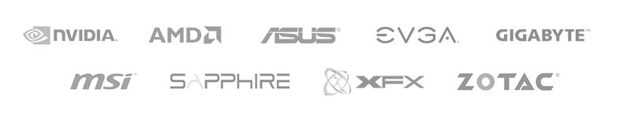

A Central Processing Unit (CPU) is the brain of the computer. This is what runs all your programs, calculations, and operations.
Modern CPUs are quite powerful, and the cheapest of our recommendations would be enough for someone simply browsing the web, using Office, and watching YouTube or Netflix. Games and serious work applications will see significant benefit from more powerful CPUs, and may not run at all on a weak CPU.
The two major CPU manufacturers are AMD and Intel. Deciding between these two brands generally depends on what price bracket you are looking at. It is better to evaluate the available products to see what fits your needs, instead of comparing companies as a whole.
The AMD lineup (grouped by family):
The Intel lineup (grouped by family):
So what is the best CPU?
Going by price brackets:
‘Overclocking’ refers to increasing the clock speed of a CPU above the manufacturer’s settings. For example, Intel’s Core i5-6600K ships with a clock speed of 3.5 GHz, but can easily be overclocked to 4.0 GHz or higher.
This will give you extra performance similar to the increase in clock speed. For example, going from 3.5 GHz to 4.0 GHz would give you as much as a 15% increase in performance.
This increase in performance comes at the expense of increased power use and heat output. All CPUs are capable of a different amount of overclocking, and if you go too far, the CPU will become unstable. Symptoms of instability are crashes, restarts, blue screens, and corrupted data.
Stock heatsinks that ship with your CPU are adequate for running at stock speeds, but may not keep an overclocked CPU cool enough. You also need to make sure your motherboard is capable of overclocking. In short: Do your research!
The majority of programs (games included) are lightly threaded, which means they only need a few cores to run. Games released as late as 2013 could easily run on just one core. For a long time, having more than a few (2-4) cores brought no benefits to the overwhelming majority of games.
But the times are changing, and more and more modern games are beginning to take advantage of the extra cores and threads of modern CPUs. As of early 2020, the best CPUs for modern gaming are 8-core CPUs! In the future, if the core count for "best gaming CPU" changes, it will go up, not down.
There is still a lot of truth to the old wisdom though; in particular, single-core and single-threaded performance are still the best determinants of a CPU’s performance in almost every game.
Non-gaming programs that may benefit from higher core counts include file compression, video encoding, 3D rendering, and server applications. If you are going to be using your computer for any of those sorts of tasks, then you may benefit from a more expensive CPU. Otherwise stick with a mid-range CPU, unless money is not a concern.
A heatsink and fan (HSF), also known as a CPU Cooler, sits atop the CPU to draw heat away from the CPU and disperse it, because CPUs produce heat while operating. Most CPUs will come with a free “stock” HSF, but if you buy a CPU that comes without a cooler and/or if you plan to overclock your CPU, you will need to buy an “aftermarket” HSF.
Many people think the stock HSFs are bad. They are actually adequate for stock settings, will work fine, and are free. If you overclock significantly, however, stock HSFs become quite loud. And if you live in a hot area without air conditioning, you may need something better than the stock HSF.
Aftermarket HSFs cost money, but are typically much quieter, and have better heat dissipation, meaning you can overclock heavily. If the stock HSF is good enough, you do not need an aftermarket HSF.
Done properly, water cooling can give you better cooling with less noise than the best air cooling. However, electricity and water don't mix well, so it can be dangerous. Do your research. More reading can be found in links at the bottom of this guide. Corsair makes some high-quality closed-loop solutions, like the H80i and H100i.
Modern thermal paste is usually very good. Use whatever comes with your heatsink. Replacing the thermal paste on your stock heatsink may actually decrease cooling performance. If you want every last bit of cooling performance, do your research before buying thermal paste, because different pastes will perform differently based on your application method and the mounting pressure of your heatsink.
The motherboard electronically connects all of your PC’s parts. It also takes power from the PSU and provides it to many of your other components.
Because motherboards connect all of your components together, the process for choosing your motherboard comes with a number of compatibility considerations:
Asus, EVGA, and Gigabyte make excellent motherboards. MSI, ASRock, and ECS are also good.
If you want to use multiple graphics cards with SLI (NVIDIA) or CrossFire (AMD), make sure you get a motherboard that explicitly allows for the correct technology. For example, some motherboard support CrossFire, but not SLI.
Carefully weigh your needs and get a motherboard that matches them. Get a motherboard that has the slots and ports that you need for your storage and cards. If you intend to overclock, get a motherboard that supports overclocking.
Overclock only if your motherboard supports it. Low-tier mobos were not designed to overclock and have less robust power systems, so get a mid-range or high-end mobo and do your research before overclocking.
The quality of a motherboard’s power features is a large part of what set an expensive motherboard apart from a cheap one. Quality motherboards usually possess more or better power phases (more isn't automatically better), solid capacitors, ferrite chokes, and MOSFET heatsinks are usually present in good-quality mobos. High-end motherboards may even have DrMos and tantalum capacitors.
You can determine the number of phases by counting the number of chokes. Higher is usually better, but going overboard (32 phases) does not help much.
Low-quality voltage regulator modules (VRMs) are typically the first thing to fry, especially if you’re overclocking. Getting something good will ensure lower temps, stable/clean power for your CPU, and a reliable, long-lasting motherboard.
Random Access Memory can store a small amount of data, but with extremely high data transfer speeds. RAM is volatile, meaning it loses all the data stored in it when the power goes off.
You should get enough RAM to suit your needs. Getting more RAM does not improve performance, unless the program you're using actually needs more. Currently, to use more than the recommended 8GB-16GB, you have to have a lot of programs and browser tabs open, be editing video or large audio or image files, or be using some other specialized data processing app.
8GB-16GB is considered fairly standard these days, and is generally the recommended amount. 32GB or more is currently only useful for people operating on a ton of data— video editing, 3D Design work, multiple VMs, etc.
Corsair, G.Skill, and Kingston have a well-known reputation for quality control. Crucial, GeIL, and Mushkin are also good. Getting RAM from another manufacturer is fine as well, but you should read reviews before buying the absolute cheapest no-name brand. All of the actual RAM chips are made by a small handful of companies: Samsung, Kioxia (Toshiba), WD, Micron, SK Hynix, or Intel.
All modern platforms use DDR4 RAM (as of early 2020), but DDR5 RAM is expected to be released in the near future (late 2020, or 2021).
DDR4 RAM is the latest available standard. DDR4 speeds are 2133MHz, 2400MHz, 2666MHz, 2800MHz, 2933MHz, and 3200MHz. Some RAM kits are rated as even faster, but support for non-official speeds depends on your motherboard. As of now, DDR4 is supported by all of the current-generation AMD and Intel CPUs. Make absolutely sure to buy RAM that is compatible with your motherboard/CPU.
When you’re shopping for RAM, get the fastest speed that you can, as long as the price difference is reasonable. Each small increase in RAM speed makes a similar (small) increase in performance. It adds up, with 3200MHz - 3600MHz usually being the "sweet spot" for performance vs price, so that might be worth it if your budget is flexible. For a lot of everyday tasks, RAM speed will not make that big a difference.
The one exception to this is APUs, such as AMD's G-series APUs, which combine the CPU and GPU into one chip. Having more bandwidth and lower latency becomes useful in that case, because the built-in GPU uses your main memory. If you can find faster RAM for a small price increase, it is worth getting if you are using an APU.
Your motherboard may run your RAM at 2133/2400 by default. If your RAM is rated faster, go into the BIOS and set it to the rated speed on the RAM, usually by enabling XMP (eXtreme Memory Profile). You can also overclock your RAM further, but be careful and check for stability, because unstable RAM will cause data loss. As stated earlier, higher RAM speeds rarely lead to noticeable real-world performance gains, so sacrificing stability in order to overclock RAM is not recommended.
Solid State Drives (SSDs) store your computer’s data, just like hard drives (HDDs). Compared to hard drives, SSDs have no moving parts, are silent, are less susceptible to mechanical failure, use less power, and are much faster. However, they’re also more expensive for the amount of storage you get.
SSDs are not a necessary component in a PC, but they are considered one of the best upgrades for those who are willing to pay the extra cost.
2.5" SATA
This is the most common type of SSD. These will work in any modern desktop, and most laptops. SATA III (3) is the most recent version, and allows speeds up to about 600 MB/s. SATA versions are backwards compatible, meaning you don’t have to worry too much about which version of SATA your motherboard or SSD are, because everything will operate at the fastest speed that both allow. These SSDs tend to offer the best combination of speed, capacity, and price.
M.2
M.2 is a new form factor for SSDs. They come in a variety of sizes and interfaces, which makes them a bit tricky. The most common size is M.2 2280, such as the Samsung 950 Pro above.
M.2 SSDs are available with the same SATA interface as the 2.5” SATA SSDs discussed above. These will have the nice small M.2 size, but will be limited to the 600 MB/s speed of SATA. The newer and faster type is M.2 PCIe (PCI-Express). The PCIe drives can transfer data at up to 3900 MB/s. An M.2 PCIe SSD is the fastest reasonable storage option for most people, but you will have to make sure your motherboard has an M.2 PCIe slot.
Another option with PCIe SSDs is AHCI or NVMe. This refers to a layer of the data interface. The summary is that NVMe was designed with SSDs in mind, so it is a little better as long as your motherboard and operating system support it. Any motherboard from about 2015 on, and Windows 8 or greater support NVMe.
mSATA
mSATA is a smaller version of SATA mostly used in laptops. It is limited to the same speeds as standard SATA, but the connectors are different.
Which is best?
All modern SSDs are much faster than any hard drive. For normal use, most people don’t notice a huge difference from the extra speed of PCIe vs SATA SSDs. However, M.2 SSDs can achieve the fastest speeds.
Today, nearly any SSD you buy from a good brand will be reliable and long-lasting. Below are some recommendations for our preferred brands, but please keep in mind that new SSDs are introduced regularly, and we may not have the most up-to-date recommendations.
Performance SSDs
Topping the charts; high prices.
SATA SSDs
Good performance, great prices. These are the drives to get if you do not know what you are looking for.
Laptop SSDs
Focus on portable, external SSDs. Plugging these drives into the newest revision USB port on your laptop is highly recommended for taking advantage of their speed.
Retired SSDs
Former champions. Not worth the price anymore, but still excellent drives when on sale.
Since SSDs are still relatively expensive for their capacity, the best way to use them is to install your Operating System and most-used programs on the SSD, and have a regular old hard drive to store all your movies, music, games, and other big data files.
An alternative way of using an SSD is to use it as a cache for your regular hard drive. This simplifies use, because in Windows you just see a single drive, so you don't have to worry about where to install programs or store data. The best way to do SSD caching is to use Intel's Rapid Response Technology, available on high-end chipsets since Z68. To use, install Windows like normal on your regular HDD, then connect your SSD, change a few settings in the BIOS, then install and configure Intel's drivers.
A hard disk drive (HDD) is one of two options for storing your data, along with solid state drives (SSD). Both options can be used to install your operating system and applications, as well as any files—such as videos, audio, and documents. HDDs are slower than SSDs, but you get larger amounts of storage for your money.
If you plan to use an HDD for your operating system and important applications, you definitely want a 7200RPM drive. A Western Digital Black or new Blue, or new Seagate Barracuda have very similar performance, so get whichever is cheapest. For a bit of extra reliability, go with a 7200 RPM HGST drive.
For general data storage, any reputable drive is fine. You don't need the speed of a 7200 RPM drive. If using an SSD for your Operating System and not editing large amounts of video or audio, get whatever is cheapest. Again, if you want extra reliability, go with an HGST drive. Or, for real reliability, look into getting additional drives and using RAID for redundancy.
HDDs contain a number of platters, each holding data. Try to get the highest platter density possible, or the smallest number of platters. This generally reduces the risks of mechanical failure because of fewer moving parts, and increases performance because more bits can be read at the same rotational speed.
The graphics card (also known as the ‘video card’) is a piece of hardware containing the Graphics Processing Unit (GPU), the memory, cooling, and controlling hardware for that GPU.
The GPU builds images, and then the graphics card sends these images to your screen for display.
Almost all graphics cards use “reference designs,” meaning they were designed by the GPU maker (AMD or NVIDIA), and then manufactured by a third party, such as ASUS or EVGA. ASUS, EVGA, Gigabyte, MSI, Sapphire, XFX, and Zotac are all good brands.

The main differences among these brands come down to the quality of the heatsink, warranty, and customer support. If you plan to use the card for more than a year, read the fine print of the warranty. If your warranty says three years, but the fine print says you have to pay for labor after one year, then it's basically a one-year warranty.
A general guide:
Your resolution typically has the greatest impact on your GPU's performance. 1920x1080, also known as 1080p, is the most common resolution for modern gaming, but a mid-tier/low-tier GPU may play modern games more easily at reduced resolutions. Higher-end GPUs are capable of playing some games at resolutions above 1080p, such as 2560x1440 (1440p) or 3840x2160 (4K).
A single powerful card is usually enough to play most games on a 1080p screen at 60 frames per second (FPS), but some gamers want to play games at higher resolutions (1440p or 4K) and/or higher framerates (144-240FPS). Many PC enthusiasts build computers containing more than one graphics card in order to gain additional graphical performance that allows gaming at higher resolutions/framerates. The technology that links graphics cards together is called SLI with NVIDIA and CrossFire with AMD.
The amount of additional performance gained from additional GPUs will vary depending on the game, but it will always be less than 100% increase. Having two GPUs will generally get you between 60-80 percent performance improvement over one GPU. A third GPU will often add at least another 20 percent to your performance compared to two GPUs, which is generally not very efficient. A fourth GPU usually doesn’t help much at all, and in many cases the framerate even decreases when compared to three GPUs.
Note that multi-GPU setups may have issues with temperature, noise, power draw, game compatibility, and future upgrades. The fewer GPUs, the less chance you have of running into these issues.
Some cards get rebranded (brand new name, same old card), with the "old brand" cards getting discounted. Some cards from an older generation still have good performance, but are discounted due to age. Consider switching to these "great-but-not-new" cards if you can find them with good discounts/combos:
From AMD:
From NVIDIA:
Most graphic cards with reference designs have similar or identical performance, noise, and temperatures, since the internals and HSF are similar. Only the sticker outside is different.
Cards with custom HSFs cost more money, but may have superior cooling, better overclockability or lower noise. Examples: MSI's Twin Frozr, Gigabyte's Windforce, ASUS' STRIX, EVGAs iCX. However, especially on lower-tier cards, custom HSFs may be used to lower costs for the manufacturer, and may perform worse than the reference model. Also, non-reference HSFs usually exhaust the hot air back into the case rather than out the back, which can make them perform worse if your case has poor airflow.
A case is a large box that holds all your components together securely. Case choices are subjective: the same case can be called ugly or beautiful depending on the viewer's taste.
Cases come in a variety of sizes. As you’re selecting your components, you’ll need to make sure that your case is big enough to fit everything—namely your motherboard, HSF (CPU Cooler), and graphics card. Essentially, this all boils down to making sure your case is the right size (“form factor”) for your motherboard.
The four most common sizes of motherboard, from biggest to smallest: E-ATX, ATX (standard), micro ATX (µATX), and mini ITX. As long as your case is compatible with your motherboard size, and you’re happy with both, you should usually be good to go. For our main table, we recommend ATX or E-ATX cases, as those have the best compatibility with the biggest range of internal components.
For those in dusty environments (or with pets), dust filters cost only a few dollars and are very helpful for keeping your PC clean.
A power supply unit (PSU) takes AC power from an outlet and converts it to clean DC power, usable by your PC. Higher quality PSUs give cleaner power and higher efficiency, and have more protections to prevent your PC from catching on fire and burning down your house. Also, cheap PSUs rarely provide their rated power. A $25 500W PSU is very likely to be a 200W PSU with a fancy sticker.
Use a PSU calculator (e.g. Outervision's PSU Calculator) to determine your power needs. Your PSU will be more efficient, cooler, quieter, and less stressed when running at lower loads, so a good idea is to get a slightly more powerful PSU than needed. Getting an overpowered PSU will not cost you extra on your power bill, either. If you get a 1000W power supply and your PC only needs 150W, the 1000W PSU will only supply 150W.
Nearly all modern power supplies are certified with an efficiency rating, typically the "80 Plus" program. "80 Plus" means that the PSU delivers at least 80% of the power taken from the wall, and wastes the rest as heat. The higher the rating (Bronze, Silver, Gold, Platinum, Titanium), the more efficient the PSU, and the less power wasted. Most PSUs are at peak efficiency at around 50% load.
Normal PSUs have all (or most) of the power cords fixed in place and not removable. Modular PSUs allow you to add or remove cords for less clutter and improved airflow, but usually come with a premium price tag.
PLEASE NOTE: cables are not necessarily compatible across different modular power supplies, and so should be thought of as never being compatible (unless you really, really, really know what you’re doing). All of the horrible stuff that we warn you about possibly happening with cheap PSUs directly below this section can also result from trying to use seemingly compatible cables from a different modular PSU or from a different manufacturer.